class: center, middle # Unsupervised Generative Neural Networks Guillaume Ligner - Côme Arvis .center[ ] --- # Unsupervised Learning: reminders - Usually the goal of unsupervised learning is to find the "best" **representation** of the data and its **underlying structure**</br> -- Typically: - clustering: assign similar observations into subsets - dimensionality reduction: project into a lower dimensional space while preserving as much information from the data as possible - likelihood function learning: estimate the true underlying data distribution and detect anomalies for instance - new samples generation: sample new samples from the learned data distribution, new realistic images for instance --- # Deep Unsupervised Learning - Using Deep Neural Networks, we generally want to capture **latent structures** in dense vectors that lie into a lower dimensional space - To do that, we can use **encoder-decoder** architectures in which the number of hidden parameters is significantly smaller than the number of original features -- - NLP: from previous courses, we saw that Word2vec based architectures can extract semantical representations from raw textual data - Computer vision: can we think about a way of projecting image data into lower space which can store latent information about the data distribution? --- # Back to self-supervised learning .small90[ - Mostly a trick to apply supervised models without labels by exploiting the **regularities of the object structure** - Often useful for some **downstream supervised tasks** that need a better representation of data ] -- .small90[ - For text data, we can use the language structure directly - Examples of self-supervised models from previous courses:</br>Word2vec, Doc2vec, Skip-thoughts, recurrent language models - For image or audio data, we could use the **spatial context** or the **temporal** context ] --- # Back to self-supervised learning .left-column60[ 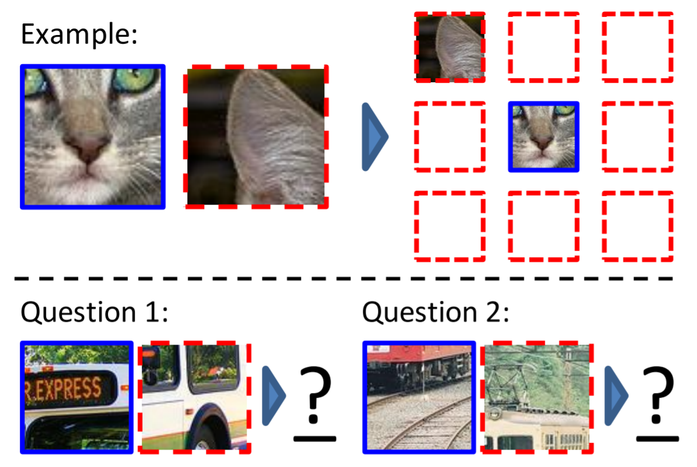 .small90[ Paper: Unsupervised Visual Representation Learning by Context Prediction ] ] .right-column40.small80[ - Split each unlabeled image into a $3 \times 3$ grid - Assign each patch to its position in the original image ] -- .right-column40.small80[ - Randomly select pairs of patches and train a ConvNet to predict the position of the second patch relative to the first - Such task requires the model to learn to recognize objects and their parts: thus such representations can be used later on downstream supervised tasks ] --- # Back to self-supervised learning - How can we learn latent representations without being forced to use the structure of objets explicitly? - A more general way is to try to learn an approximation of the identity function, and that is what **autoencoders** do --- # Autoencoders .center[ 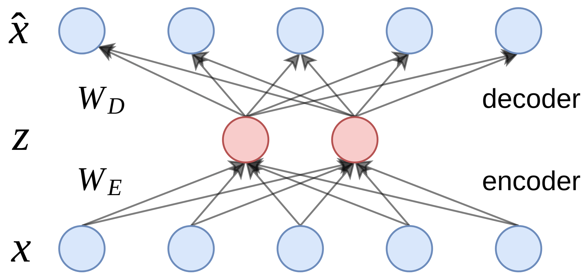 ] - The basic idea is to minimize the **reconstruction loss** of the input, for instance with the MSE, $E$ and $D$ being the encoder and the decoder, and $z$ being our hidden vector: .center[ $L(x, f(x)) = ||D(E(x)) - x||_2^2 = ||D(z) - x||_2^2 = ||\hat{x} - x||_2^2$ ] --- # Autoencoders .center[ ] - To avoid trivial solutions like the exact identity function, we place constraints on the network such as limiting the hidden units number $|z|$ - By doing so, we force the network to discover interesting intrinsic structures, which leads to a "smartly compressed" representation of the data - Autoencoders can thus be seen as a **non-linear way** to do PCA --- # Autoencoders: denoising application .center[ <img src="images/denoising.png" style="width: 400px;" /> ] - Autoencoders can be used as a denoising model by applying others constraints to the hidden layer besides dimension reduction - In particular, we can add a hard sparsity constraint on $z$: $||z||_1 = \rho$</br>$\rho$ beeing a small value chose by the user --- # Autoencoders: semi-supervised learning application .center[ 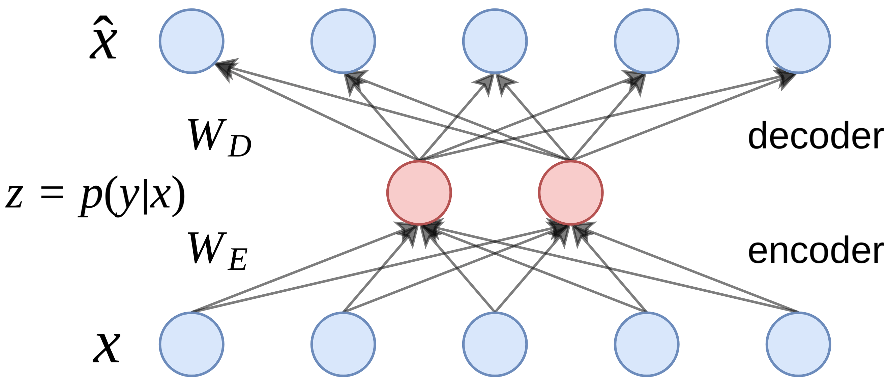 ] - Semi-supervised learning is a method that uses **both labeled and unlabeled data**: labels are used to identify existing groups while raw samples define the boundaries of those groups - Usually we have a lot more unlabeled data than labeled ones as these are way more expensive to collect --- # Autoencoders: semi-supervised learning application .center[ ] - One idea could be to fix the latent space dimension with K hidden units, K being the number of classes we have in our labeled dataset - Thereby, we can minimize both the **cross entropy** between $p(y|x ; W_E)$ and $y$ using our labeled dataset, and the **MSE reconstruction loss** between $\hat{x}$ and $x$ using our unlabeled dataset --- # Autoencoders: limitations .big110[ - The learned decoder function could be used as a **generative model** to generate realistic samples once learned - However, it turns out that such architectures perform poorly as a sample generator in practice ] -- .big110[ - Standard autoencoders only learn a **compressed representation** on the data, and do not estimate the **parameters** of the real distribution - We would like to inject a **prior distribution** over the $z$ latent variable, and estimate the parameters of this distribution using the encoder of the network ] --- # Variational Autencoders (VAE) .left-column30[ 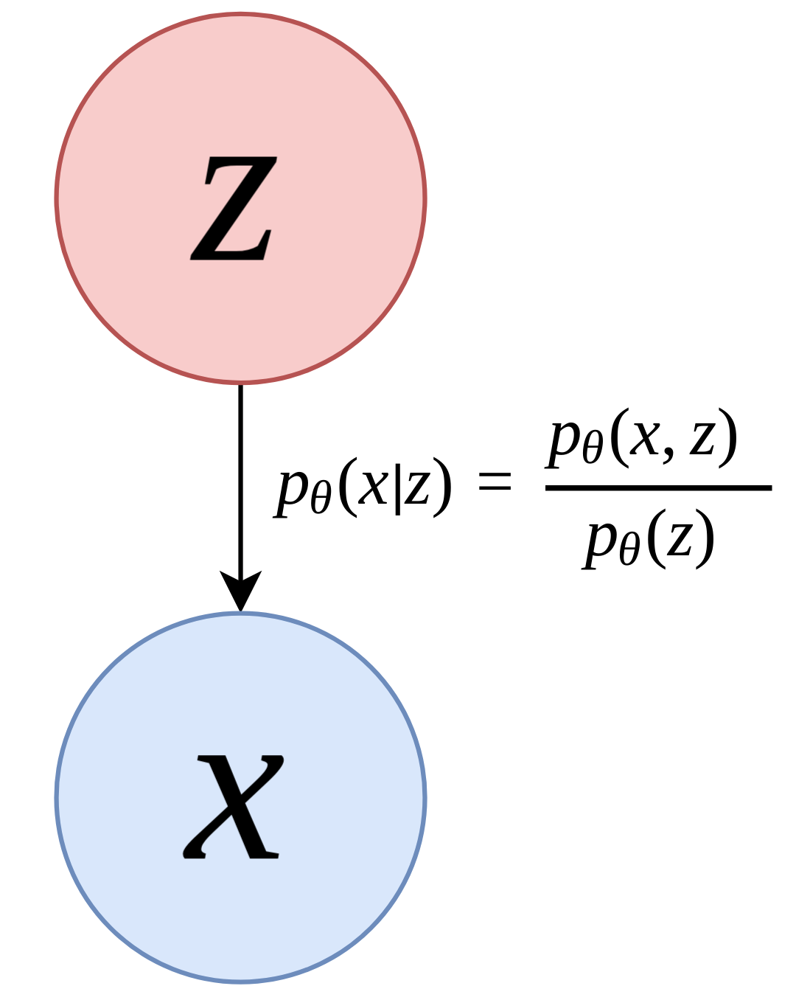 ] .right-column70[ - We can see the architecture as a graphical model, suppose now that the hidden variable $z$ generates the observations $x$ with true unknown parameters $\theta^{\star}$ - Knowing only $x$, we would like to estimate $\theta$ and reverse the conditional probability with the Bayes formula:</br> .center[ $p\_\{\theta\}(z|x) = \frac\{p\_\{\theta\}(x|z) \cdot p\_\{\theta\}(z)\}\{\int p\_\{\theta\}(x|z) \cdot p\_\{\theta\}(z) dz\}$ ] - However, it turns out that this high dimensional integral is intractable, we can instead **approximate** $p\_\{\theta\}(z|x)$ by **another distribution** $q\_\{\phi\}(z|x)$ ] --- # Variational Autencoders (VAE) .left-column30[ 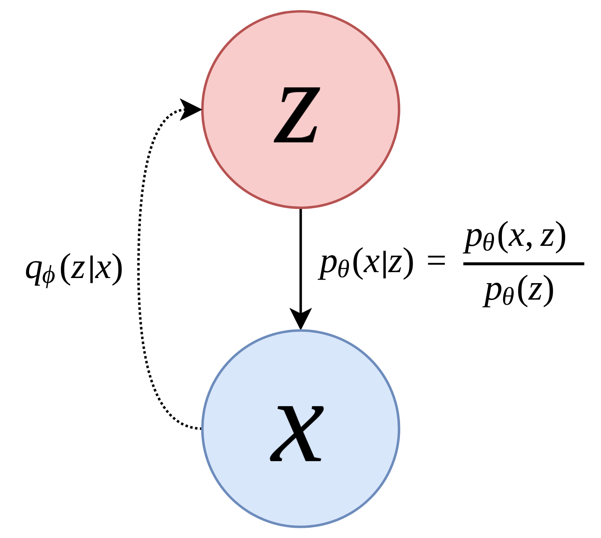 ] .right-column70.small90[ - We want a measure of difference between two probability distributions to minimize: the **Kullback–Leibler divergence**:</br></br> .center[ $\operatorname{min} KL(q\_\{\phi\}(z|x) || p\_\{\theta\}(z|x))$ ] - It turns out that minimizing the equation above is equivalent to maximizing the following (**ELBO**):</br></br> .center[ $\operatorname{max} \mathbb\{E\}\_\{q\_\{\phi\}(z|x)\} \log p\_\{\theta\}(x|z) - KL(q\_\{\phi\}(z|x) || p\_\{\theta\}(z))$ ] - The first term represents the reconstruction likelihood and the second term ensures that our learned distribution $q\_\{\phi\}(z|x)$ is similar to the true prior distribution $p\_\{\theta\}(z)$, which we'll assume follows a **unit Gaussian distribution** $\mathcal{N}(0, 1)$ ] --- # Variational Autencoders (VAE) .center[ 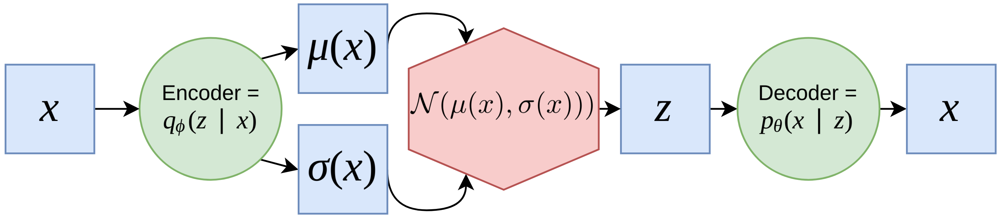 ] </br> - The encoder parametrizes the gaussian distribution $q\_\{\phi\}(z|x)$ with two nodes $\mu\_\{\phi\}$ and $\sigma\_\{\phi\}$: .center[ $q\_\{\phi\}(z|x) = \mathcal\{N\}(\mu\_\{\phi\}(x), \sigma\_\{\phi\}(x))$ ] - The stochastic latent variable $z$ is then sampled from this distribution - Finally, the decoder parametrizes $p\_\{\theta\}(x|z)$ by a neural network $f\_\{\theta\}$: .center[ $p\_\{\theta\}(x|z) = \mathcal\{N\}(f\_\{\theta\}, 1)$ ] --- # Variational Autencoders (VAE) .center[ 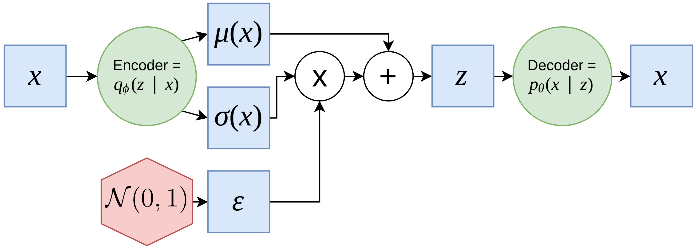 ] - To be able to use the backpropagation algorithm and make the objective differentiable wrt. $\theta$ and $\phi$, we need to modify a bit the previous architecture with an idea called the **reparametrization trick**: .center[ $z = \mu\_\{\phi\}(x)$ + $\sigma\_\{\phi\}(x) \cdot \epsilon \quad \text{with} \quad \epsilon \sim \mathcal\{N\}(0, 1)$ ] - Doing so, we ensure that our samples are deterministically depending on the parameters of the distribution --- # Scaling VAE to real images: DFC-VAE .center[ *Deep Feature Consistent Variational Autoencoder* ] </br> .left-column50[ <img src="images/dfcvae1.gif" style="width: 350px;margin-bottom: 5%" /> ] .right-column50[ <img src="images/dfcvae2.gif" style="width: 280px;margin-left: 15%;margin-bottom: 5%" /> ] - Deeper VAE architecture including **convolutional layers** for the encoder and **deconvolutional layers** for the decoder - We can visualize the latent space and perform arithmetic operations on it --- # VAE: advantages and limitations .big120[ - Nice probabilistic formulation with the ELBO maximization - Relatively easy to train and robust to hyperparameter choices</br> ] -- .big120[ - The reconstructed images have a "blurring" effect, thus it can be difficult to generate realistic images - Another architecture may be a better choice for images generation: **Generative Adversarial Networks** (**GAN**) ] --- # Generative Adversarial Networks: motivation Yann Lecun (Director of Facebook AI Research Paris and Professor at NYU), 2016: .center[“There are many interesting recent development in deep learning [...] **The most important one, in my opinion, is adversarial training** (also called GAN for Generative Adversarial Networks) [...] This, and the variations that are now being proposed is **the most interesting idea in the last years in ML**, in my opinion.”] --- # A GAN production .center[ 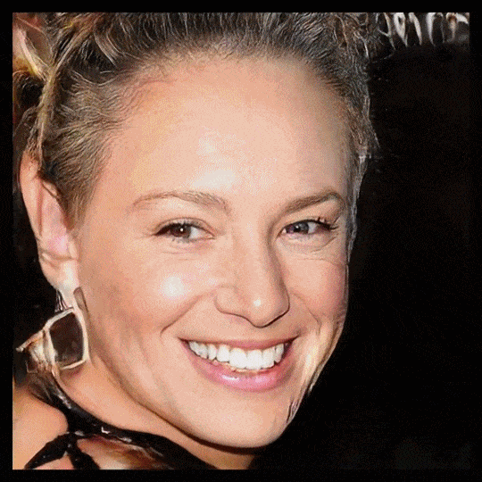 ] All images are generated by GANs, walking through a latent space --- # General base framework **Goal** - Generate artificial data that looks like some real data distribution - ex: generate pictures that look "real" **Constraints** - Cannot provide the actual distribution to the generator net - Generator net has no meaningful input to help it - Fed with random vectors - Maps a random distribution to the desired data distribution --- # General base framework .center[ 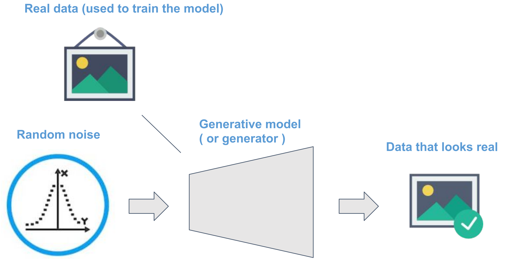 ] --- # Solution - We could minimize the distance between the generator's prediction and closest neighbour in dataset - With MSE for instance - Problem becomes supervised - Very expensive - Poor results - GAN solution: use another network to guide the generator net - Adversarial training --- # Adversarial training for GAN - Train the discriminator to make the difference between fake and real data - Supervised training .center[ 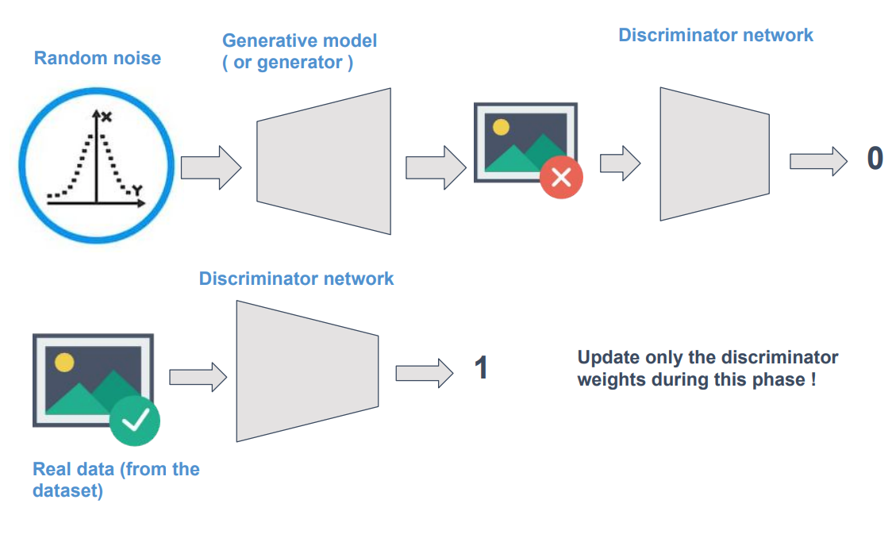 ] --- # Adversarial training for GAN - Train the generator to generate data that fools the discriminator - Repeat until discriminator lost - returns always 0.5 - At this point generated data looks like actual distribution data .center[ 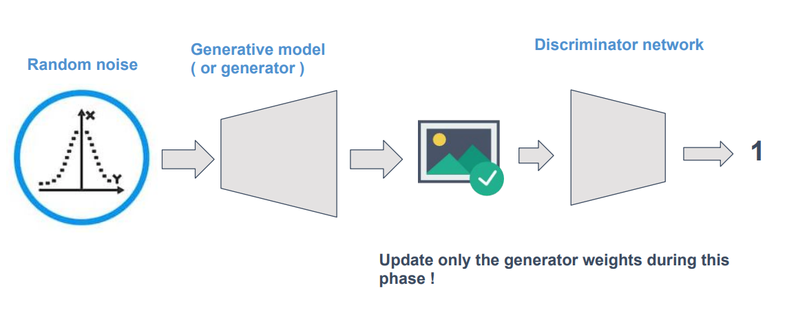 ] --- # GAN .center[ <img src="images/gan_vanilla.jpg" style="width: 240px;" /> ] Alternate training of a **generative network** $G$ and a **discrimininative network** $D$ --- # GAN - D tries to find out which example are generated or real - G tries to fool D into thinking its generated examples are real -- Sample real data $x \sim p_{data}$ .center[ <img src="images/gan_eq1.png" style="width: 640px;" /> ] -- Sample $\mathbf{z}$ and generate fake data $G(\mathbf{z})$ .center[ <img src="images/gan_eq2.png" style="width: 640px;" /> ] -- .center[ <img src="images/gan_eq3.png" style="width: 640px;" /> ] --- # GAN Practical algorithm - Initialize both networks - Training - Sample a mini-batch of noise vectors and sample a mini-batch of input data - Update the discriminator weights with those batches (gradient descent on its loss) - Sample a mini-batch of noise vectors - Update the generator weights with this batch (gradient descent as well) --- # GAN **1D-example** .center[ <img src="images/gan_1d.png" style="width: 560px;" /> ] - optimal: $\color{blue}{D} = \frac{1}{2}$ , $\color{green}{G(\mathbf{z})} = p_{data}$ -- - $G$ never "sees" training data, it is solely updated from gradients coming from $D$ -- - Naive Keras implementation: ```python d_loss = K.mean(-K.log(Dx) - K.log(1 - DGz)) g_loss = K.mean(K.log(1 - DGz)) ``` --- # Towards DC-GAN - DC-GAN: Deep Convolutional Gan - Using the Discriminator, we want it to classify real and fake images - Using the Generator, we want it to produce fake images that fool the Discriminator into believing they are real - Standard idea for vision related tasks: use Convolutional Networks .center[ <img src="images/dcgan.png" style="width: 700px;margin-left:-10%;margin-top: 6%" /> ] --- # Towards transposed-convolution - Convolution decreases the data size - Perfect for the discriminator - Just needs a handful of concepts summarized in a small vector - To output only a scalar: $0$ or $1$ - Generator though needs to increase dimensionality from input to output - We may resort to standard interpolation techniques - Poor results - Not “learnable”: no learnable parameters - Solution: transposed convolution aka deconvolution or up-sampling --- # DC-GAN properties .center[ <img src="images/dcgan2.png" style="width: 500px;margin-left:0%;margin-top: -5%" /> ] - GANs training is unstable, may suffer from **mode collapse** - Generator only produces somes parts of $p_{data}$ - Ex: A Generator that produces only $6s$ on MNIST dataset - Training is very **sensitive** to some **hyperparameters** - Use of batchnorm - Strided convolutions - Learning rates - Several $D$ updates per $G$ updates... --- # DC-GAN properties .center[ <img src="images/dcgan2.png" style="width: 500px;margin-left:0%;margin-top: -5%" /> ] - Generator generates less-blurry images than VAEs - Latent space has some local linar properties - Vector arithmetic like with Word2Vec --- # DC-GAN properties Vector arithmetic like with Word2Vec .center[ 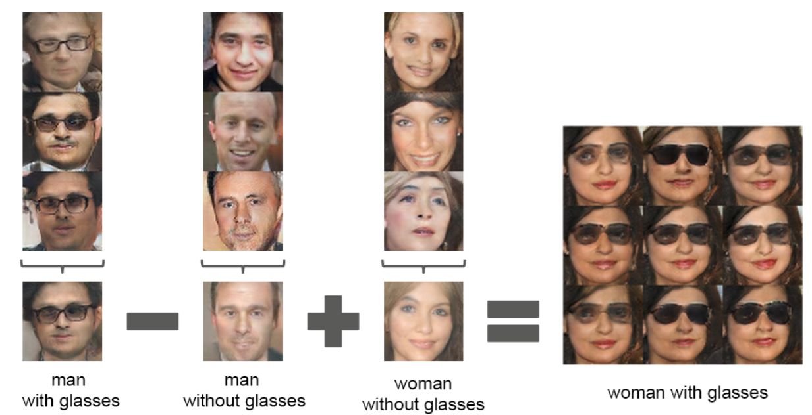 ] --- # DC-GAN a training example Manga faces DC-GAN Generator through training .center[ <img src="images/dcgan_training_manga.gif" style="width: 350px;margin-left:0%;margin-top: 0%" /> ] --- # GAN ultra realistic generated images A Style-Based Generator Architecture for Generative Adversarial Networks (2018) .center[ 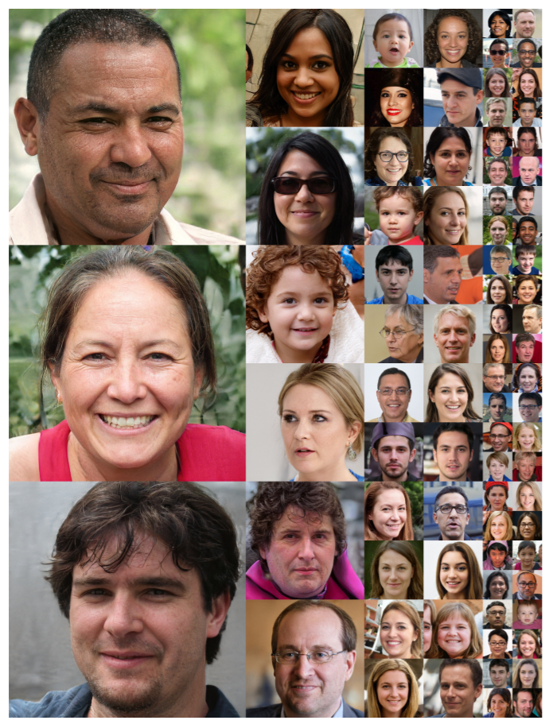 ]